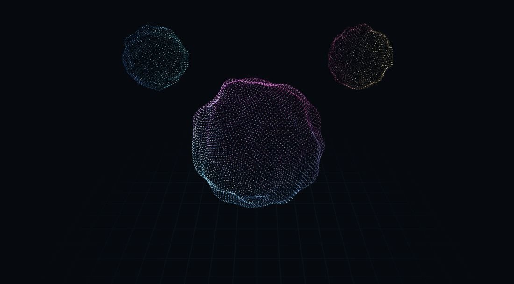
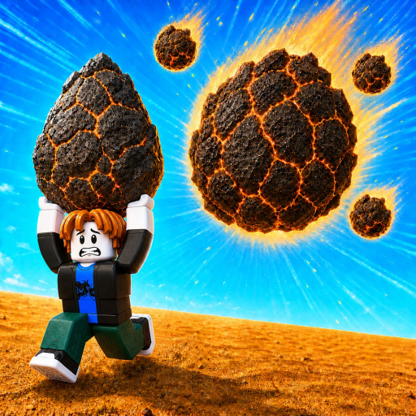
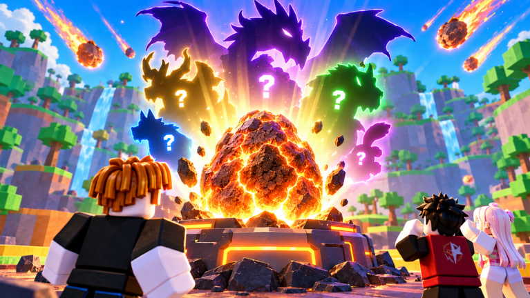
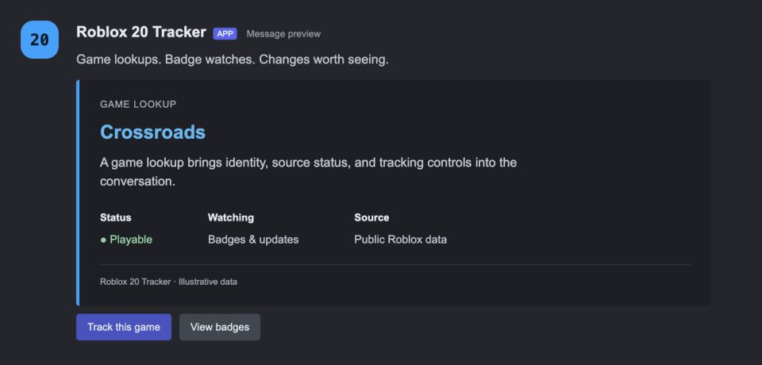
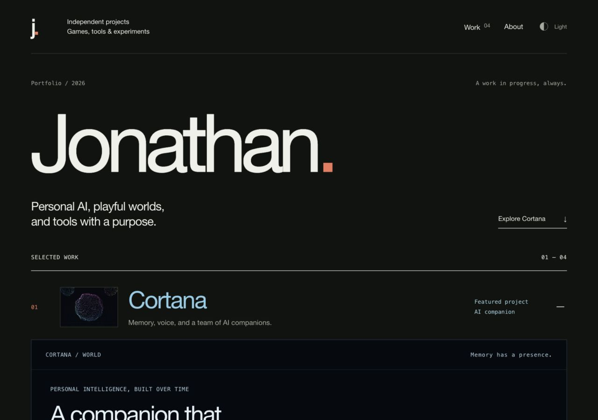
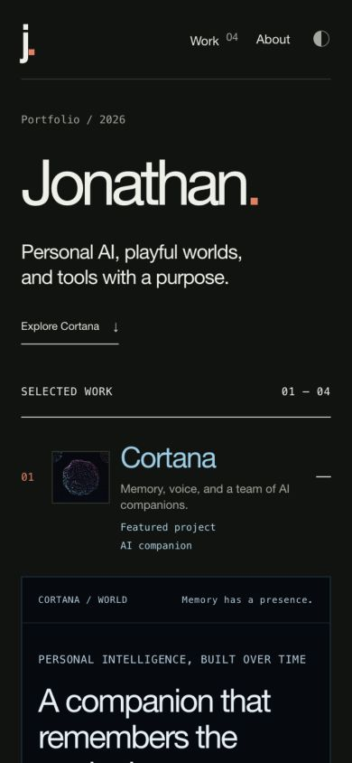

Remember what matters.
Connect moments, people, insights, goals, and long-running life arcs. Browse and edit the memory that gives later conversations their context.
Personal AI, playful worlds,
and tools with a purpose.

Memory, voice, and a team of AI companions.
Personal intelligence, built over time
From a passing thought to a useful insight.
From a conversation to something done.
A personal memory and reflection system that connects meaningful moments, conversations, and insights over time.
Cortana brings together voice, a desktop app, persistent companions, and scheduled workflows. Its memory lives locally, with model APIs providing the intelligence.
One memory.
Many ways to work with it.
Connect moments, people, insights, goals, and long-running life arcs. Browse and edit the memory that gives later conversations their context.
A local voice listener with speaker recognition, a native macOS app, a global shortcut, and notifications. The same companion across surfaces.
Persistent companions have their own tools, prompts, voices, and task queues. They can delegate to each other and file longer work into Knowledge.
Build scheduled workflows with AI steps, conditions, and delivery. Test a draft, publish a version, and review what happened in each run.
Organize documents and uploads in Knowledge. Connect external services with explicit capability grants and an audit trail.
Read and search approved projects, inspect Git changes, and dispatch coding agents into isolated worktrees. Review the diff before applying their work.
Personal memory stays in a local database. Model API calls provide the intelligence.

Small worlds. Something waiting inside.

A Roblox game built around meteors, collectible titans, and distinct worlds. From the plains to volcanic terrain, each zone has its own creatures and character.
The work spans environment art, creature design, animation, and the interfaces that bring the game together.

Keeping up with what changes on Roblox.
/inspect/badges/watch/statusA Discord bot project for tracking Roblox games, badges, updates, and event information. It brings the details into the place where a community already talks.
An exploration of how game data can become useful, timely information inside a server.

A home for the things I’m making.

A small, deliberately simple portfolio. Four projects, a few notes, and space for the work to speak for itself.
Built with semantic HTML and CSS, native keyboard-accessible project disclosures, light and dark appearances that follow your system setting, and a layout that gives each project its own space.
I’m Jonathan. I like building across the edges of games, AI, and the tools we use every day.
These projects are different ways of following the same curiosity: what can I make that I’d want to spend time with?
Have something in mind?
jonathan@jonchu.xyz